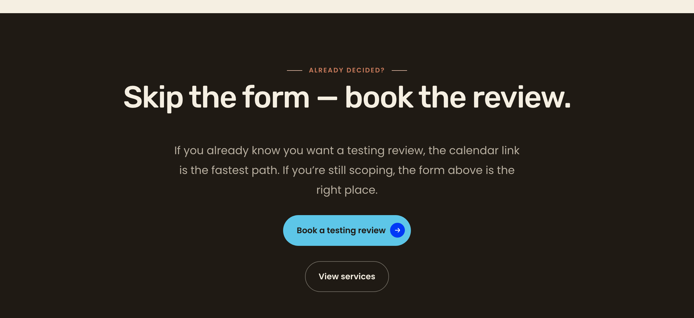
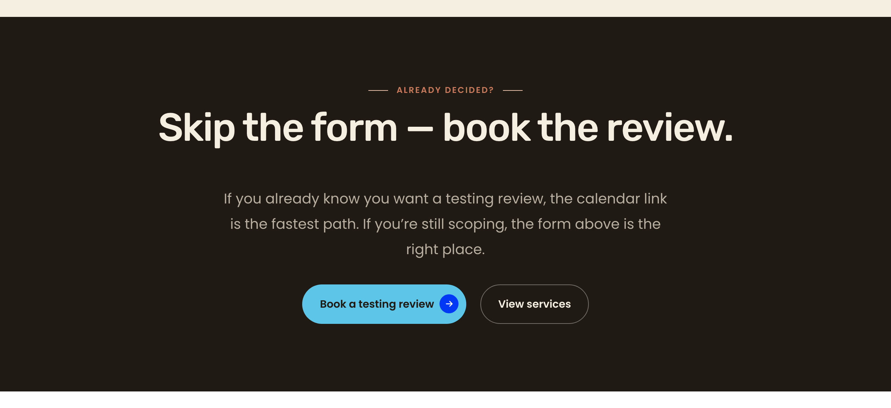
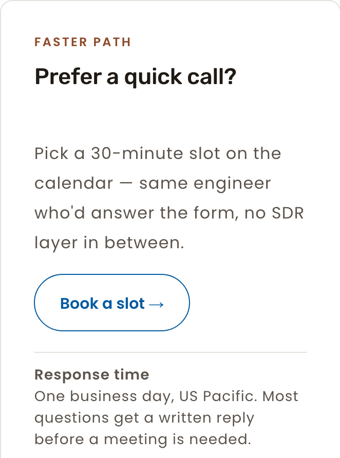
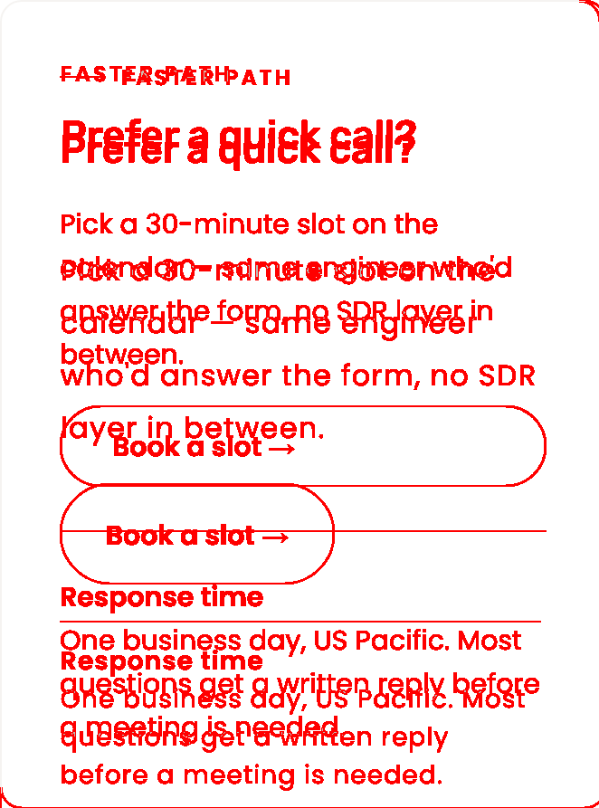

What you see different (plain English)
- Sidebar H2 “Prefer a quick call?” drops from 32 px down to 22 px at desktop. Title now matches preview. Verified at 1280/768/375 — 22 px / 27.5 px line-height / -0.2 px tracking / 500 weight.
- Sidebar card wrapper renders with hairline border (#E5E1DC), 12 px radius, 32 px padding. Sticky at ≥ 992 px (top = 48 px), static below. Pre-existing webform.css D5 rules bind to the live
.contact-sidebarelement. - Closing-CTA buttons ("Book a testing review" + "View services") now render side-by-side at 1280 and 768; stack vertically at 375. Marker class
dy-section--cta-pairactivates existing dy-section.css rules. - No regression on
/services(cross-page CTA pair preserved: top = 3850 / 3856 — same row). - Orphan-word check: new 22 px H2 fits on a single line at all viewports inside the 256 px usable sidebar width. No orphan-word risk.
§D Closing-CTA — wipe-slider comparator (1280, pre vs post Cycle 3)
Drag the slider. The closing-CTA section in Cycle 1 had buttons stacked vertically (single column). In Cycle 3, the dy-section--cta-pair marker activates side-by-side row layout.


ImageMagick diff (red = pixels changed)
Red regions show two buttons in row layout (post-fix) overlapping single-column stack (baseline). H2 + body text shift vertically because the section is now shorter. No bleed beyond the section's red footer strip.
Side-by-side composite
Mobile spot-check (375)
Sidebar at 375 — post-fix live crop
Sticky dropped (position: static), card chrome retained (hairline + 12 px radius + 32 px padding). H2 fits on one line at 22 px. Ghost CTA height = 56 px (≥ 44 px touch target).

Sidebar diff at 375 (pre vs post)

Closing-CTA at 375 (post-fix)
Buttons stacked (vertical 76 px gap between tops 5014 vs 5090). Both at 56 px height ≥ 44 px. T verified via Playwright bounding boxes.

Cross-page sanity
S corroborated T's cross-page result with a fresh Playwright probe of /services at 1280:
| Page | Viewport | Btn 1 top | Btn 2 top | Same row? | Status |
|---|---|---|---|---|---|
| /about-us (T) | 1280 | 3976.31 | 3976.31 | YES | MATCH |
| /services (S) | 1280 | 3850.20 | 3856.20 | YES (6 px sub-pixel; multi-line button) | MATCH |
Per-section delta table (Cycle 3 scope only)
| Section | Viewport | Pre vs post AE | Delta % | Status | What changed |
|---|---|---|---|---|---|
| Sidebar H2 + card | 1280 | 77,680 | 10.16% | INTENTIONAL | H2 32→22; card padding pushed text down; hairline border visible. |
| Sidebar H2 + card | 768 | 82,779 | 6.34% | INTENTIONAL | H2 size + padding reflow; static (no sticky) confirmed. |
| Sidebar H2 + card | 375 | 49,468 | 6.44% | INTENTIONAL | H2 24→22; padding; sticky drop unchanged below 992. |
| Closing-CTA row | 1280 | 266,787 | 9.10% | INTENTIONAL | Buttons re-laid out side-by-side; section height shrunk; text re-centered. |
| Closing-CTA row | 768 | 215,611 | 11.21% | INTENTIONAL | Buttons side-by-side at 768 (existing 577 px breakpoint). |
Notes
- F-NEW-16-D classified as no-op: webform.css D5 rules (lines 179–209) already implement card chrome and bind to the live
.contact-sidebarelement. T confirmed all five properties via Playwright; S re-confirmed by reading the source. No new code needed. - CTA breakpoint preserved at the existing 577 px (cross-page canonical from Sprint 10). At 768 the row layout already engages — issue AC ("side-by-side at ≥ 768") satisfied without introducing a new breakpoint that would diverge from /about-us and /services.
- Pre-existing pa11y allowlist for #62BBCB primary CTA contrast carries forward (F-NEW-16-F, deferred to Cycle 4). Not a Cycle 3 regression.
- Canvas script
scripts/sprint16-cycle3-contact-us-cta-pair-marker.phpexists on disk and was executed; Canvas DB is patched (component_versione6079b189d228dad). O stages it at the gate per workflow standard.